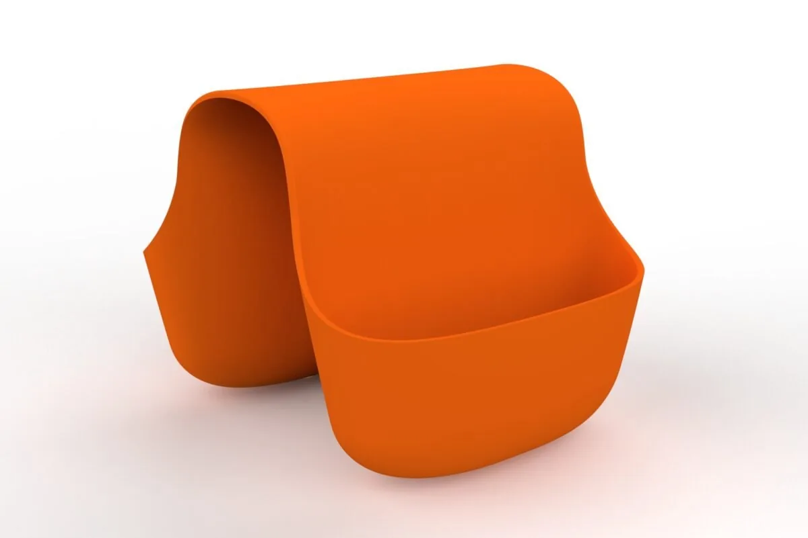
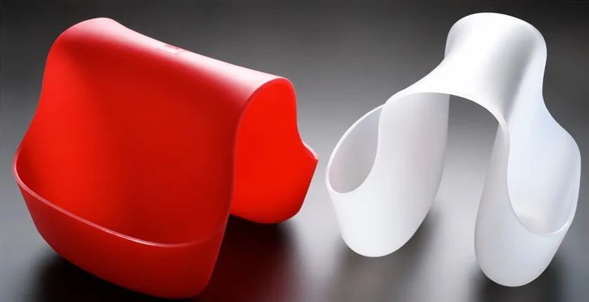
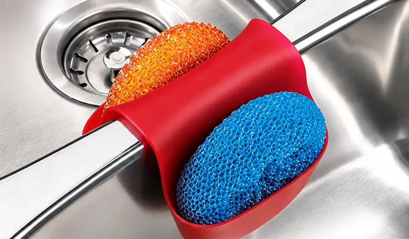
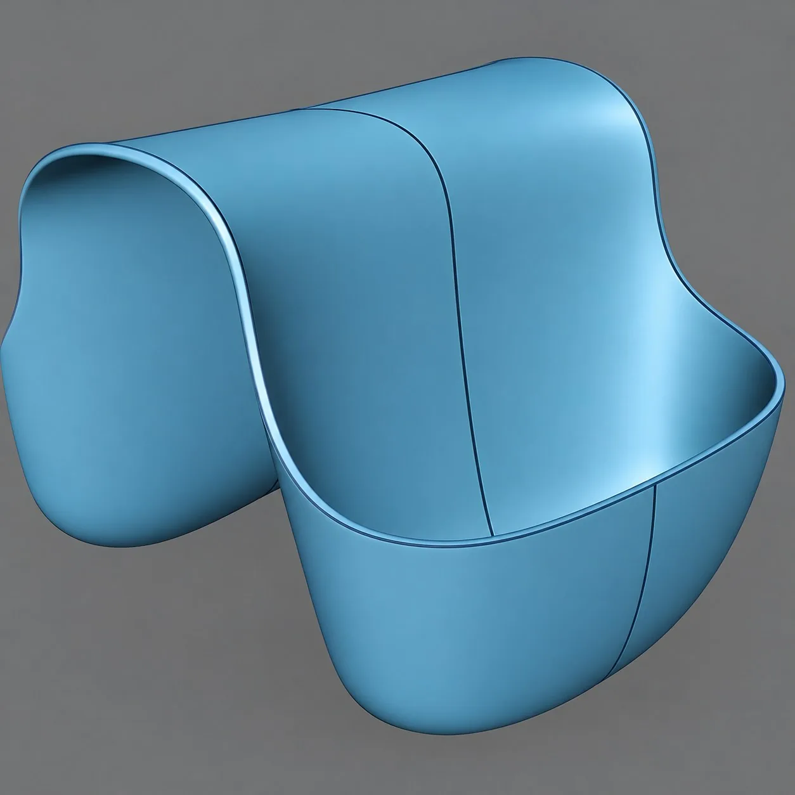
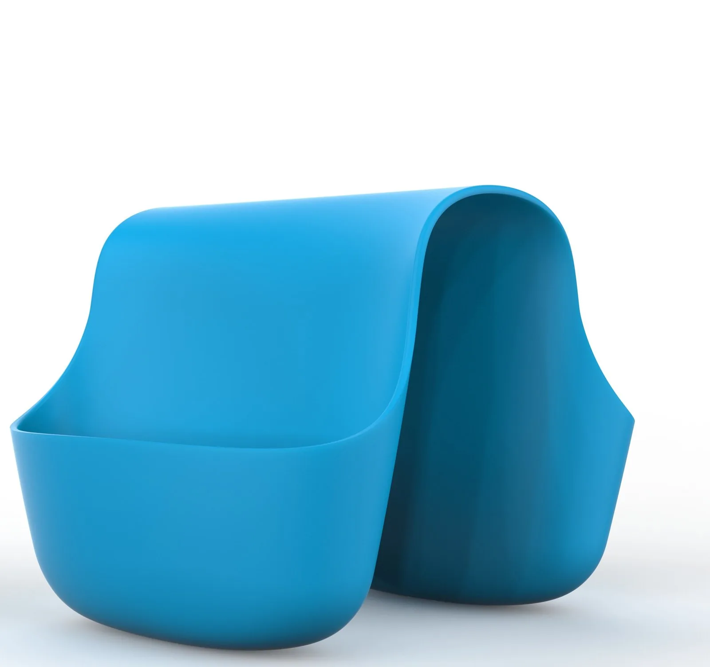
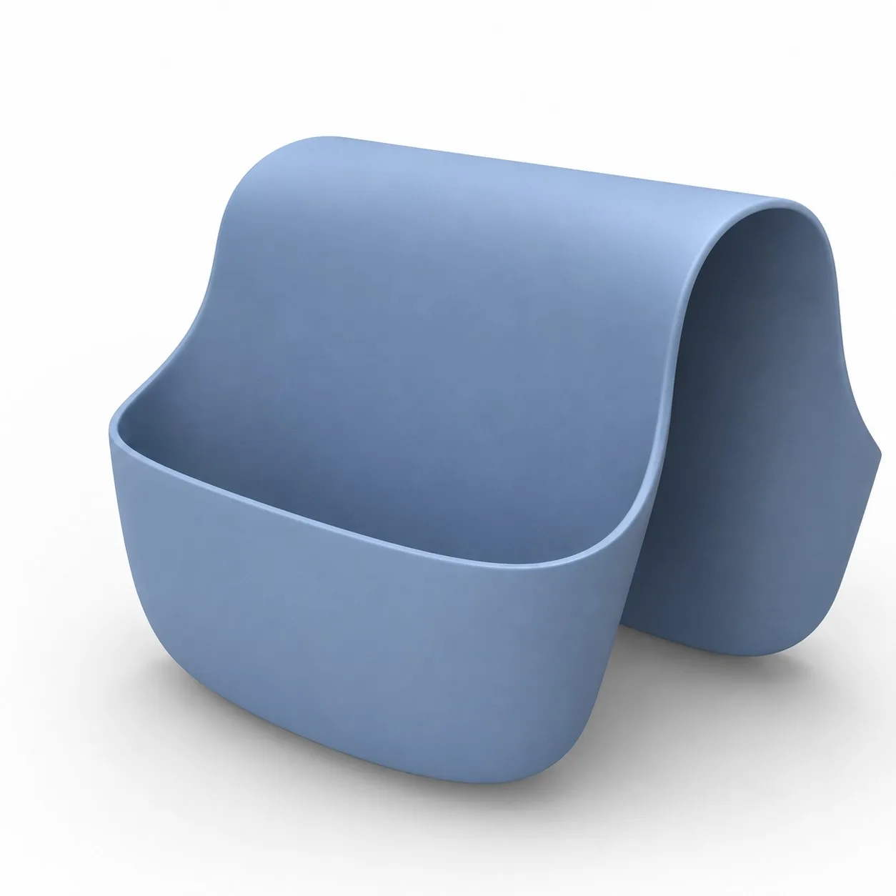
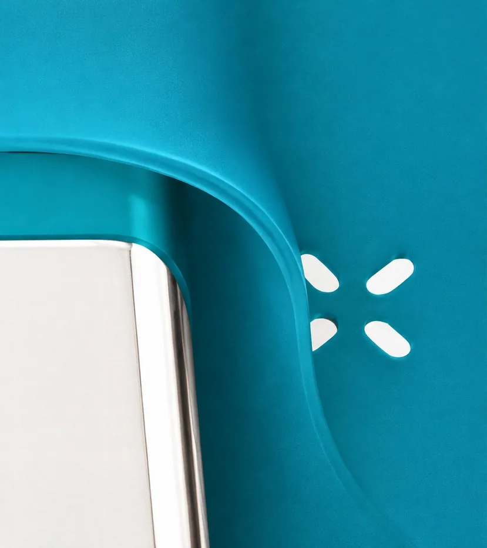

Everyday tools, elevated.
Umbra
The Sink Caddy turns a drawer full of loose dish tools into one sculpted object that belongs on the counter. We designed it to hold a sponge, brush, and soap within reach while draining cleanly, so it looks as good sitting out as it works.
It's injection-moulded in TPU with no secondary finishing. The material itself gives it the soft-touch, grippy feel straight out of the mould. The brief from Umbra was simply "kitchen innovation." We set out to design something that could sell for $10 and install without tools, yet still feel considered enough to leave out on display. Its minimalist form adapts to different sinks and kitchens rather than looking like an add-on. It's been in production since 2007 and has sold more than 45 million units.





